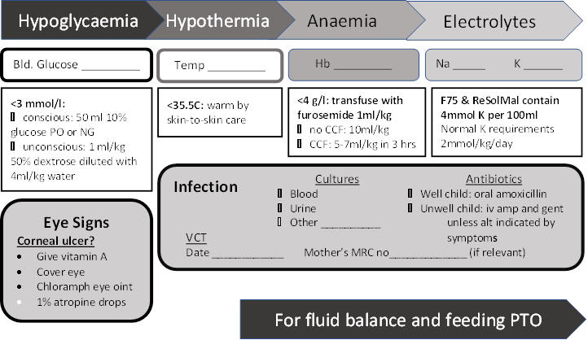
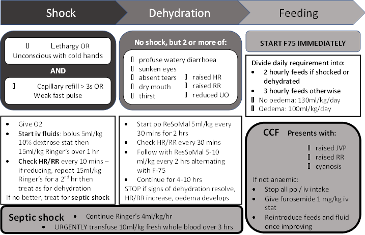

Severe acute malnutrition
Executive summary
Introduction
Malnutrition is a significant public health problem. Severe acute malnutrition is defined as the presence of oedema of both feet or severe wasting (weight for height/length less than -3 SD or mid-upper arm circumference < 115 mm). It is a medical emergency requiring prompt assessment and specialized treatment. Children with severe acute malnutrition should first be assessed with a full clinical examination to confirm if they have any general danger sign, medical complication and an appetite.
Children who have a good appetite and no medical complication can be managed as outpatients with PlumpyNut (a ready to use food – RTUF).
Children with severe acute malnutrition with loss of appetite or any medical condition have complicated severe acute malnutrition and should be admitted for inpatient care. The treatment of malnutrition is divided into 3 main stages: urgent treatment, stabilisation and rehabilitation.
Target users
· Doctors
· Nurses
Target area of use
· Gate clinic
· Outpatients
· Ward
· Supplement Centre
Key areas of focus / New additions / Changes
This guideline takes into consideration the differences between Fajara and Keneba in care of children with severe acute malnutrition.
Limitations
This guideline is limited in scope to
children under 12 years of age. Outpatient management and post-discharge care
are only available in Keneba.
Presenting symptoms and signs
Any child who is severely wasted or who has bilateral oedema of the feet should be assumed to be severely malnourished.
All patients with severe malnutrition should be referred to the doctor as a priority. These patients should not be kept waiting in the OPD queue, but should see the next available doctor, with the exception that patients with the emergency features described below must be sent straight to the ward and have the doctor called to see them immediately.
Important things to look for
· Assess for general danger signs or emergency signs. Children with the following features should be sent directly to the ward and should be immediately reviewed by a doctor
|
Hypothermia (axillary temperature < 35°C) |
|
|
Signs of respiratory distress, such as nasal flaring or chest indrawing, or increased RR |
Age under 2 months: > 60 bpm |
|
2-12 months: > 50 bpm |
|
|
1-5 years: > 40 bpm |
|
|
over 5 years: > 30 bpm |
|
|
Fever (> 38.5°C) |
|
|
Unconscious or fitting |
|
|
Weakness, lethargy |
|
|
Severe or intractable vomiting |
|
|
Profuse diarrhoea |
|
|
Severe dehydration based on clinical signs |
|
|
Extensive skin lesions |
|
|
Severe anaemia (either PCV < 12% or very pale) |
|
|
Spontaneous bleeding. |
|
Initial assessment
Whilst the patient is waiting for the doctor to arrive, the nurses should measure the weight, length or height, MUAC, temperature, HR, RR, blood glucose. They should start to complete the Malnutrition Care Pathway.
The doctor should take history concerning:
· Weight loss or failure to gain appropriate weight
· Recent intake of food and fluids
· Usual diet before current illness
· Fever
· Diarrhoea: type, duration and frequency of diarrhoea
· Vomiting
· Loss of appetite/poor appetite
· Cough > 2 weeks, history of contact with TB
· Known or suspected HIV infection / exposure
Examination findings
Severe acute malnutrition is characterized by wasting and/or edema:
Wasting (loss of muscle bulk with no subcutaneous fat, loose skin folds)
· Weight-for-length/height < -3 SD or
· Mid upper arm circumference < 115 mm
Oedema of both feet (with or without severe wasting)
· below ankle (grade 1 +)
· oedema in both feet and legs (grade 2 ++)
· oedema in both feet, legs, arms and face (grade 3 +++)
Other findings in severe acute malnutrition may include:
· Restless, miserable, irritable
· Severe palmar pallor, mouth ulcers, oral candidiasis,
· Eye signs of vitamin A deficiency: dry conjunctivitis or cornea, Bitots spots, corneal ulceration, keratomalacia
· Localizing signs of infection including ear and throat infection, skin infections, skin changes, hypo or hyperpigmentation, desquamation, skin ulcerations, exudative lesions resembling severe burns with secondary infections including Candida.
Conduct an appetite test to check if child has appetite by providing ready to use therapeutic foods.
Differential diagnosis
· Tuberculosis
· HIV
· Congenital heart disease
· Other underlying medical or social conditions
Investigations
Essential investigations:
· Blood glucose
· Full Blood Count
· HIV test
Other tests that may be requested for patients who are very ill, have other specific conditions or fail to respond to standard care include:
· Urine dipstick,
· Urine MC&S
· Stool MC&S
· Blood culture
· Chest X-ray
· GeneXpert
· Serum Electrolytes, Urea and Creatinine
· Liver Function tests
Management
Children who pass the appetite test and are clinically well and alert should be treated as outpatients for uncomplicated severe acute malnutrition with PlumpyNuts. Such patients should be sent to the Nutritional Rehabilitation Centre (if residing near Keneba) or to their local Nutrition Officer.
Children who have severe oedema (+++), fail the appetite test, present with one or more general danger signs or have medical conditions requiring admission should be treated as inpatients. This care is divided into 3 main stages: urgent treatment, stabilisation and rehabilitation. In Keneba, stabilisation and rehabilitation typically take place in the Nutritional Rehabilitation Centre (Supplement Centre) except where medical complications are present.
Urgent Treatment
The Malnutrition Care Pathway will guide the urgent treatment of these patients (See Attachment 01).
|
Condition |
Immediate action |
|
Hypoglycaemia Diagnose if blood glucose < 3 mmol/l Assume hypoglycaemia is present if no dextrosticks available. |
If conscious: Give 50 ml 10% glucose orally or via NG tube. Start F75 as soon as possible. If unconscious: Give 1 ml/kg 50% glucose diluted with 4 ml/kg water for injection iv. |
|
Hypothermia Diagnose if axillary temperature < 35°C |
Give 50 ml 10% glucose orally or via NG tube. Start F75 as soon as possible. Keep warm – nurse child skin-to-skin on mother’s chest and cover them. |
|
Severe anaemia Diagnose if Hb < 4g/dl OR Hb 4-6 and respiratory distress |
If no signs of heart failure: Give 10 ml/kg whole blood over 3 hours. If signs of heart failure: Give 5-7 ml/kg packed cells over 3 hours. In both cases: give furosemide 1 ml/kg at the start of the transfusion (Refer if seen at Keneba) |
|
Shock Diagnose if child is lethargic OR Unconscious with cold hands AND either Capillary refill more than 3s OR Weak fast pulse |
Give O2. Give bolus of 5 ml/kg 10% dextrose iv. Follow this with 15 ml/kg fluid over 1 hour. Suitable fluids are:
Monitor HR ad RR every 10 minutes. If HR and RR fall, continue this for a second hour. Otherwise treat for septic shock. |
|
Septic shock Diagnose if child has not responded to initial treatment for shock. |
Continue current iv fluids at rate of 4 ml/kg/hr. Arrange urgent transfusion of 10 ml/kg fresh whole blood over 3 hours. Start iv antibiotic treatment. (and refer if seen at Keneba) |
|
Severe dehydration Diagnose if there is no shock, but 2 or more of the following signs:
|
DO NOT GIVE iv FLUIDS Give ReSoMal 5 ml/kg every 30 mins for 2 hours. Monitor HR and RR every 30 mins. Follow with ReSoMal 5-10 ml/kg every 2 hours (alternating with F75) for 4-10 hours. STOP ReSoMal if signs of dehydration resolve or if HR or RR increase or if oedema develops. Do not continue it for more than 10 hours. Do not delay F75 because you are giving ReSoMal. |
|
Corneal ulceration
|
If present, give vitamin A immediately (Age < 6/12 50,000 IU, 6-12/12 100,000 IU, > 12/12 200,000 IU) Also instill 1 drop of 1% atropine to the affected eye. Apply chloramphenicol eye ointment, then cover the eye with saline soaked eye pad. |
|
Congestive heart failure Usually occurs as a complication of over-hydration, very severe anaemia, transfusion or ingestion of too much sodium. |
Presents with:
If fluid overload is thought to be the cause:
May also present during later phases of feeding. If HR and RR rise and persist at this stage, reduce feed volumes to 100 ml/kg/day for at least 24 hours and gradually increase feeds after this. |
Stabilisation
This phase seeks to treat and prevent the main features and complications of malnutrition.
Hypoglycaemia
Defined as blood glucose below 3 mmol/l.
Signs are lethargy, reduced conscious level and drowsiness, hypothermia.
Assume there is hypoglycaemia present if any of these signs are present and you are unable to test the blood glucose level.
Treat as described under urgent treatment.
After the initial treatment, give F75 and antibiotics as described below as soon as possible.
Check blood glucose 2 hours after treatment and retreat if necessary.
Prevent recurrence by feeding with F75 every 3 hours during day and night.
Hypothermia
Defined as axillary T < 35°C.
Treat as described under urgent treatment. Treat all hypothermic children for hypoglycaemia and infection.
Check temperature every 2 hours until it rises above 36°C.
Prevent recurrence by
· feeding with F75 every 2 hours during day and night
· keeping child covered and away from draughts
· keeping child dry (including nappies)
· encouraging mother and child to sleep together at night.
Dehydration and electrolyte imbalance
Dehydration can be overdiagnosed and its severity overestimated. Malnourished children usually have raised total body Na and are deficient in K and Mg. ReSoMal is specially formulated to provide less Na than ORS and to replace the electrolyte deficiencies. Extra electrolytes are also added to F75 and F100 and extra supplements are not usually needed.
Treat as described under urgent treatment.
Check HR, RR, urine frequency and stool frequency every 30 mins for the first 2 hours, then every 2 hours for the next 10 hours.
Prevent recurrence by
· feeding with F75 every 2 hours during day and night
· encouraging mother to continue breastfeeding
· replace ongoing losses due to diarrhoea, by weighing nappies and giving equivalent volume of ReSoMal.
Note that malnourished children often pass many small unformed stools – this is not diarrhoea and does not need replacing.
Infection
Test all febrile children for malaria and treat if positive. Also test all mothers of breastfeeding children and all other children for HIV.
Treat all malnourished children for infection. Children who appear well should be given oral amoxicillin 25 mg/kg TDS for 5 days.
If there are signs of shock, treat as described under urgent treatment.
If the child is ill or has any complications (hypoglycaemia, hypothermia, broken skin, obvious RTI or UTI), then give:
· Ampicillin 50 mg/kg iv QDS for at least 48 hours (then follow with oral amoxicillin if improving).
AND
· Gentamicin 7.5 mg/kg iv OD for 7 days.
If there is no improvement in fever after 48 hours, add Chloramphenicol 25 mg/kg iv QDS for 5 days.
Children who continue to be febrile after 48 hours of chloramphenicol should have their antibiotics changed to Ceftriaxone 80 mg/kg iv OD for 7 days.
Children who remain febrile after this are very likely to have TB and should have a CXR, plus sputum induction or gastric washings sent for GeneXpert.
If there are any specific signs of infection, then add the appropriate antibiotics to the above regimen.
If the child is over 9 months old and has not had measles vaccination, they should be immunized as soon as possible (Keneba) or sent to Bakau Health Centre for this as soon as they are stable (Fajara).
Worms
Delay worm treatment until the patient is on F100. Then give mebendazole 100 mg BD for 3 days to all children over the age of 1 year.
Micronutrient deficiency
All malnourished children have vitamin and mineral deficiencies. Sachets of F75, F100 and PlumpyNut contain supplements of these. It is not necessary to give separate supplementation of any micronutrients to children receiving these (the only exception being a child with measles or eye complications).
Initial Feeding
All children with malnutrition need feeding as soon as possible. However, the initial feeds must be small and frequent.
Start feeding with F75. This contains 75 kcal/100ml of feed. There is 0.9 g protein in each 100 ml.
Start feeding at a rate of 130 ml/kg/day unless the child has oedema in which case the initial rate is reduced to 100 ml/kg/day. Give the feeds every 3 hours, unless the child is shocked or severely ill, in which case 2 hourly feeds must be given at first.
Give the feeds from a cup (using a syringe or dropper if the child is very weak).
An NG tube may be used if
· the child is unconscious
· the child cannot take more than 75% of the prescribed feed
· there are painful mouth lesions
· the respiratory rate is raised.
Children who are breast fed can continue this, but should take their prescribed feeds first. Children should not eat other food, but can drink extra liquid if they are thirsty.
The volume of F75 is not increased.
Treatment of complications during stabilisation
Eye conditions
Vitamin A deficiency may present with dry eyes, Bitot spots, corneal ulceration, keratomalacia and photophobia.
Treat children with corneal ulceration as described under urgent treatment. Give all children with eye signs vitamin A (age < 6/12 50,000 IU, 6-12/12 100,000 IU, > 12/12 200,000 IU) on days 1, 2 and 14 of admission.
Skin conditions
Dermatosis presents with hypo- or hyper-pigmentation, desquamation, ulceration, exudative lesions looking like burns (which is often infected with candida).
Soak the affected areas in 1% potassium permanganate solution for 10 minutes per day. Apply zinc and castor ointment to the lesions. Also apply anti-fungal cream if there is evidence of candida infection. Avoid using nappies to allow the perineum to dry.
Zinc supplementation is an important part of the treatment, but is provided in the feeds given to the child.
Continuing diarrhoea
Diarrhoea is common and often resolves without specific treatment. If the diarrhoea is not associated with weight loss or dehydration, then it does not require intervention. However, if it continues and there is evidence of dehydration or weight loss, then consider the following options.
Giardia is common. Send the stools for microscopy. If suspicion of giardiasis remains or the diagnosis is confirmed, treat with 7.5 mg/kg metronidazole po TDS for 7 days.
Diarrhoea that worsens with the introduction of feeding may be caused by small bowel bacterial overgrowth or lactose intolerance.
Small bowel bacterial overgrowth is also common. It usually resolves within a few days without specific intervention. If there is no resolution, then consider using a flour-based F75 formula. If you do this, then you will need to provide vitamin and mineral supplementation (follow the instructions in the WHO blue book).
Lactose intolerance is very rare. F75 is a low lactose feed. Diarrhoea which worsens with the introduction of F100 could be due to this. If necessary, either use a flour-based F100 formula (and supplement with vitamins and minerals) or substitute feeds with plumpy nut as soon as possible.
Ileus may occur and is a poor prognostic sign. It presents with absent bowel sounds and distended abdomen. Treat as follows:
· Withhold all drug treatment as it is most commonly a sign of drug toxicity.
· Give the child 2 ml 50% magnesium sulphate IM BD until they pass stool.
· Insert an NG tube and aspirate the stomach contents. Flush the stomach with 50ml 5% dextrose until the aspirated fluid is clear. Then leave 5 ml/kg 10% dextrose in the stomach. Aspirate again after 1 hour. Measure the fluid and make up the volume to 5 ml/kg with more 10% dextrose. Continue this until there are signs of improvement, whilst monitoring for hypoglycaemia.
· If there is no sign of improvement after 6 hours, then give iv fluids as described under treatment for shock.
· As soon as there is improvement, start feeding with F75. Use half the usual volume in the first instance. Aspirate the stomach prior to feeding. Reduce the feeds until there is nothing left in the stomach prior to the next feed. Once the stomach is empty when the next feed is due, the volume of feeds can be increased.
Rehabilitation
As soon as the child’s appetite returns and any oedema has gone, replace the F75 with the same volume and frequency of F100. If this is tolerated, then increase the volume of feeds (by as much as 10 ml per feed) until the child can no longer drink the volume offered.
Children who are breastfed should be offered this prior to their therapeutic feeds. Therapeutic feeds must, however, be given prior to any other food.
Once the child is tolerating F100 with no problems, replace it with PlumpyNut (1 PlumpyNut sachet is equivalent to 500ml of F100).
Monitor
· weight gain
· heart rate and respiratory rate
· presence of oedema
· abdominal girth – for hepatomegaly or ileus.
If there is rapid weight gain (> 10 g/kg/day), worsening oedema, diarrhoea causing weight loss or dehydration, or the child needs NG feeding, move back to F75 and the stabilisation phase of treatment.
Infants under 6 months of age
Malnutrition under the age of 6 months is very rare and is usually a sign of an underlying medical problem. The principles of treatment are the same as in older children.
Wherever possible, the mother should be encouraged to breast feed their child and breast milk should be given before other feeds. Re-lactation treatment or a supply line can be used to promote breastfeeding.
If the mother cannot express enough breast milk, then infant formula should be used to make up the volume of feed.
Discharge from ward
Children can be discharged from the ward to complete their rehabilitation phase in the community, once:
· They are clinically well and no longer on parenteral treatment.
· All complications have resolved.
· Their appetite has returned and they are eating their PlumpyNut well.
· They are steadily gaining weight.
Refer the child to the Supplement Centre (if resident in Keneba) or to their local nutrition officer for ongoing monitoring and provision of PlumpyNut.
Key Issues for Nursing care
· Prevent hypothermia actively by making sure child is clothed especially the head, cover with warm blankets and by using Kangaroo care. Place the bed in a warm part of the ward. Change wet nappies and wet clothes to keep the child dry.
· Be familiar with appetite testing and nasogastric tube feeding.
· Ensure patient’s hands and face are washed before feeding.
· Offer the child plenty of water when child is eating RTUF.
· Sensory stimulation helps: Provide a cheerful stimulating environment, structured play therapy for 15-30 mins/day, provide suitable toys and play activities for the child.
References
Protocol on the integrated management of acute malnutrition. Banjul., The Gambia: Ministry of State for Health and Social Welfare and National Nutrition Agency; 2013.
Pocket book of hospital care for children: Guidelines for the management of common illnesses with limited resources. 2nd ed. Geneva: World Health Organization; 2013.
Attachments


Attachment 02: Discharge letter
|
Written by: |
Name: Dr Yorro Bah |
Date: 12 April 2019 |
|
Reviewed by: |
Name: Dr Baderinwa Abatan |
Date: 12 April 2019 |
|
Version: |
Change history: |
Review due date: |
|
1.0 |
New document |
|
|
2.0 |
Updated and transferred to new template |
31 May 2021 |
|
Review Comments (if applicable) |
|
|